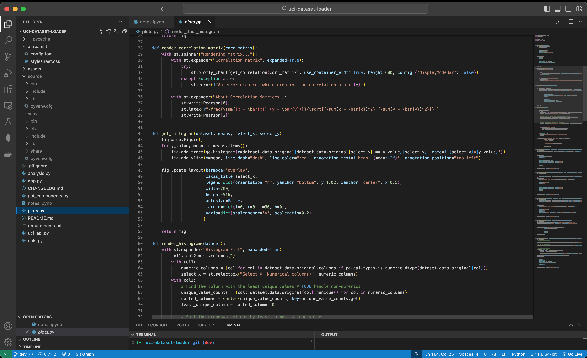

My skills as a full stack developer

As of 2024, I'm working full-time as a Full Stack Developer in fintech. I like to create neat utility scripts, write APIs, visualize data with plots and experiment with machine learning models using Python.
I'm also maintaining anodet, an open source convolutional neural net anomaly detection model based on ResNet and PatchCore.
While I'm currently in favor of backend development, I do have a passion for user interface and visual design. I enjoy building mockups and wireframes, creating digital marketing material and experimenting with different web frameworks.
In 2024 I finished my studies at IT-Högskolan 🇸🇪, where I graduated in machine learning.